Один и тот же ключевой слайд «Как устроен помощник ТЗ». Ниже своё направление (Ж), затем два прошлых раунда для истории. Открывать на компьютере, звук не нужен.
Своё, из темы урока. Камера сверху над столом под лампой; стрелка ведёт её от заголовка к телефону с настоящими репликами бота, к планшету с окном агента и к распечатанному ТЗ Александра. Всё на столе настоящее. Geologica и Golos Text, янтарный свет лампы на тёмном дереве. В колоде так же: каждый слайд — остановка камеры над вещью.
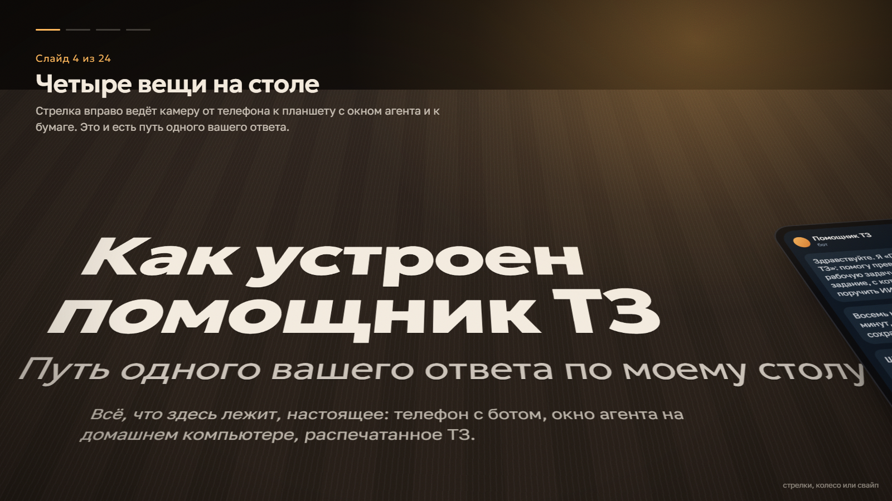
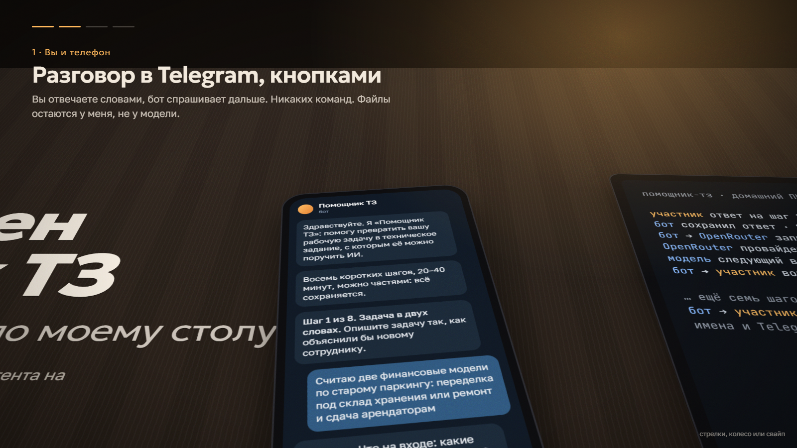
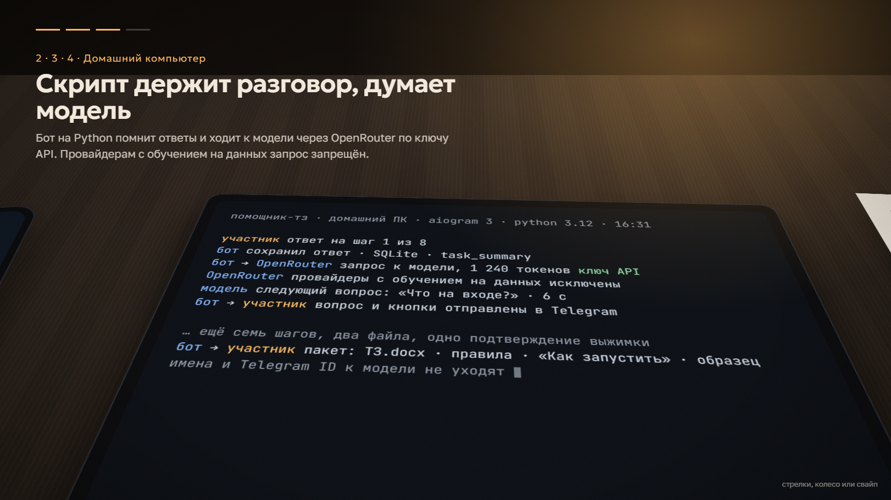
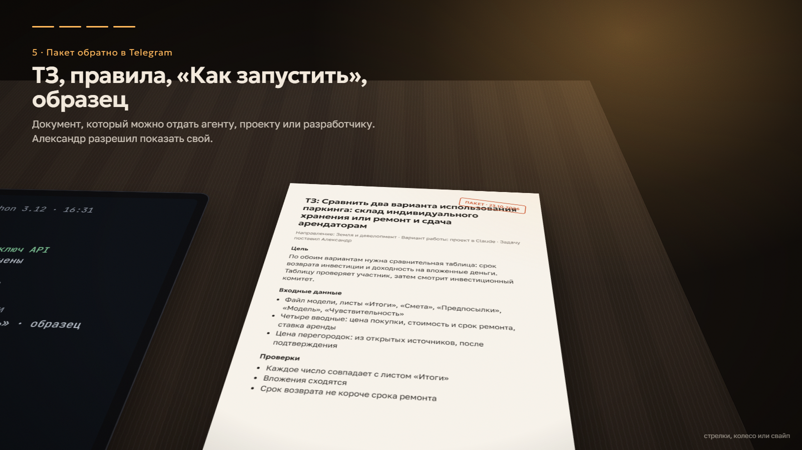
По вашему первому промпту: аэросъёмка над составом скрабится клавишей, заголовок поднимается по оси поезда, пять узлов зеркально вокруг оси, в конце туман и светлая часть с цифрами. Exo 2 капителью, кремовый на угле.
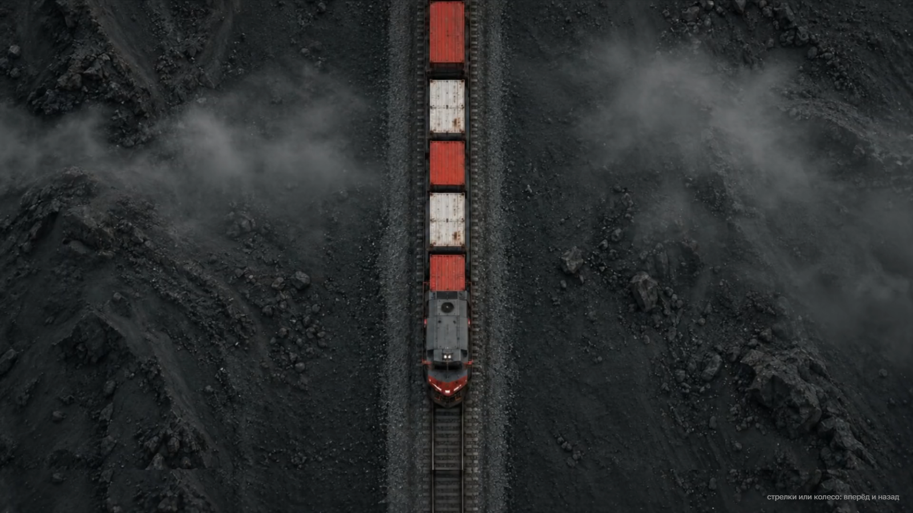
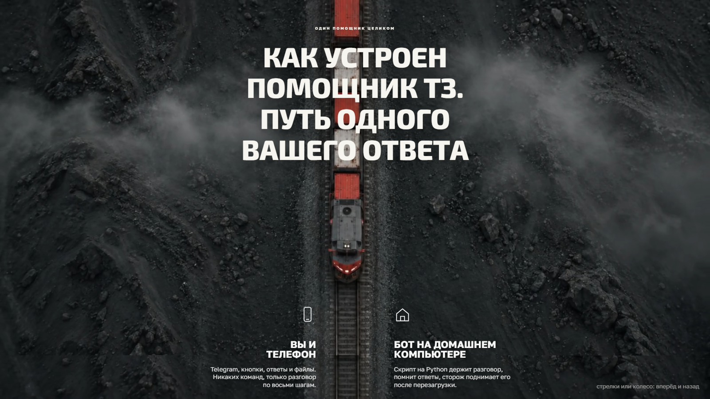
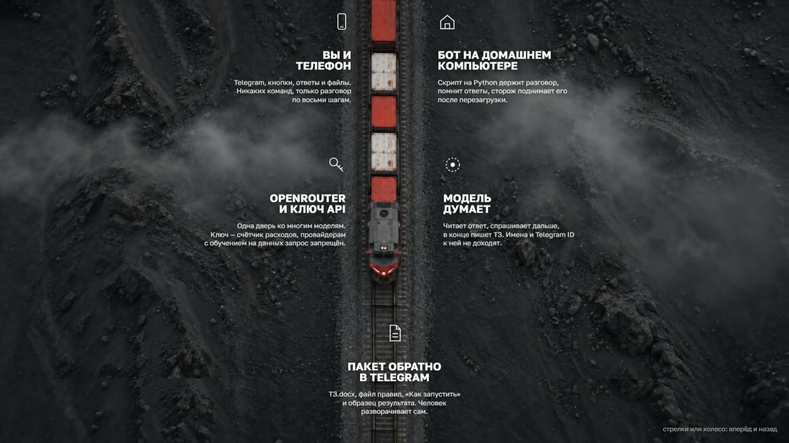
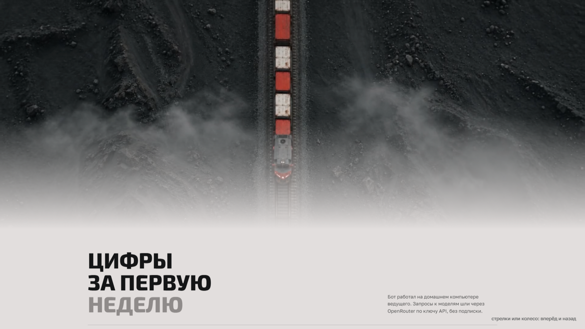
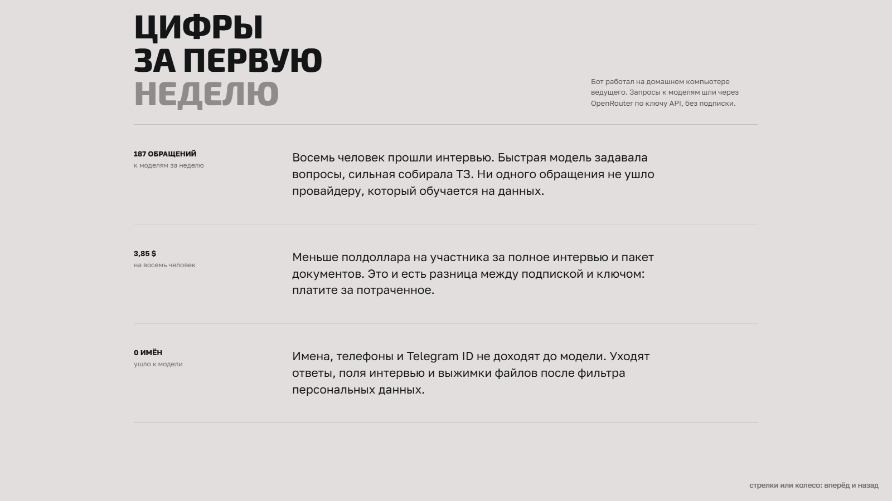
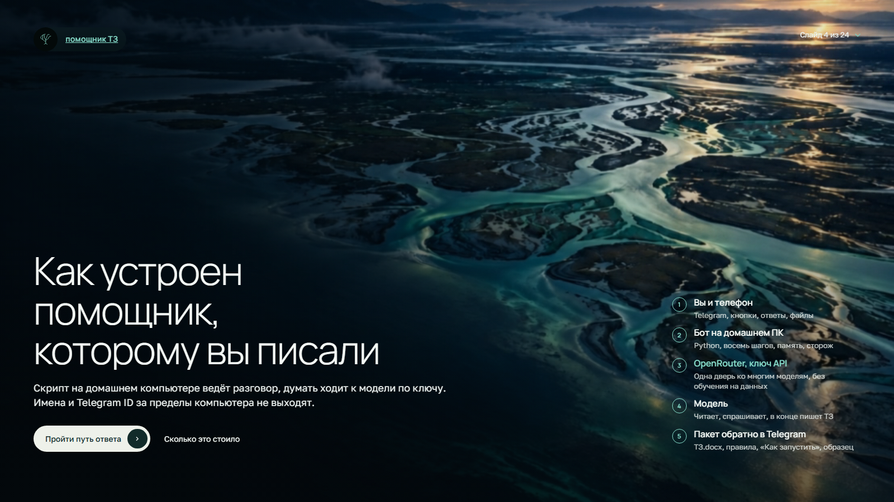
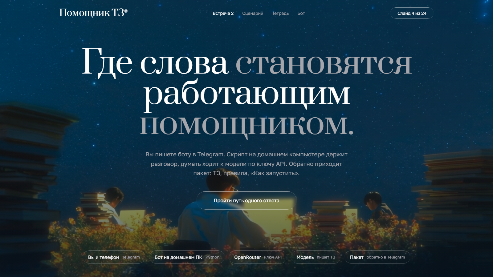
Статичные схемы без видео: А «Ночной рейс», Б «Чертёж», В «Консоль». Оставлены для истории.